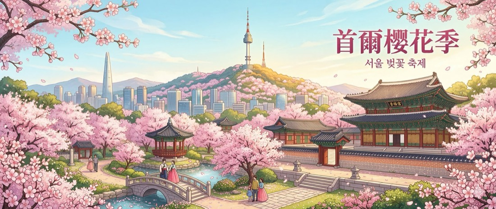
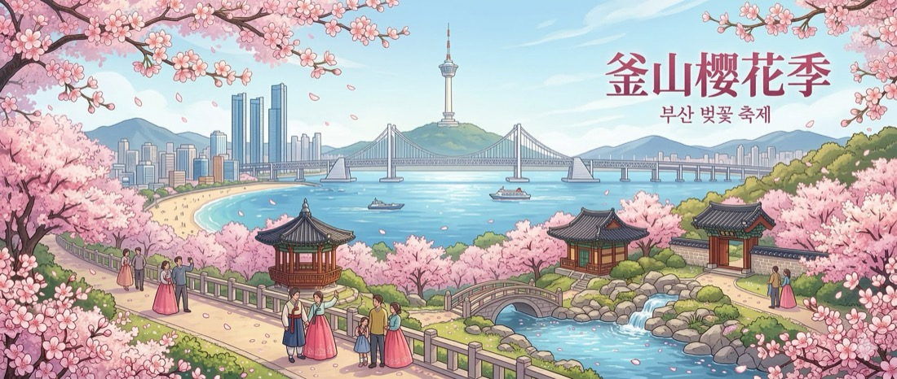
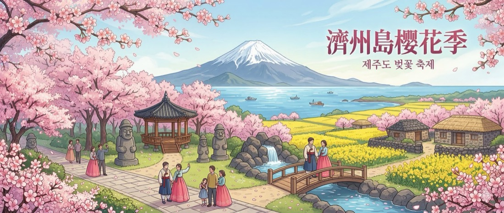

從首爾的宮殿到釜山的海岸，再到濟州的王櫻花——跟隨春天的腳步，邂逅最浪漫的粉色韓國
開始探索 →大韓民國，一個融合千年歷史底蘊與尖端現代科技的東亞國度。從莊嚴的古宮殿到霓虹閃爍的首爾街頭，從寧靜的佛教寺院到風靡全球的K-Pop文化，韓國以獨特的魅力吸引著世界各地的旅人。這裡有令人垂涎的美食文化、四季分明的自然景觀，以及熱情好客的人民，每一次造訪都能發現全新的驚喜。
從朝鮮王朝的五大宮殿到UNESCO世界文化遺產，韓國保存了豐富的歷史遺產。穿上韓服漫步古宮，穿越時空感受朝鮮王朝的優雅風華。
從街邊的辣炒年糕到精緻的韓定食，韓國料理以大膽的調味和豐富的發酵文化著稱。泡菜、烤肉、部隊鍋——每道菜都是味蕾的盛宴。
春櫻、夏綠、秋楓、冬雪，韓國的四季各有風情。而春天的櫻花季，更是全年最夢幻的時刻，粉色花瓣將整個國度染上浪漫色彩。
每年三月下旬至四月中旬，韓國迎來最令人期待的櫻花季。粉白色的花瓣由南向北依序綻放——從溫暖的濟州島率先揭開序幕，經過港都釜山的海岸線，最終抵達首都首爾的街頭巷尾。櫻花在韓語中稱為「벚꽃（beotkkot）」，象徵著新生與希望。韓國人習慣在花下野餐、散步、拍照，是迎接春天最溫暖的儀式。
櫻花由南向北綻放：濟州最早（3月下旬），釜山緊隨其後，首爾約在4月初開花。滿開期約在開花後一週達到巔峰，但僅維持數天即開始飄落。
濟州島是珍貴「王櫻花（왕벚나무）」的原產地，花朵比一般櫻花更大、花瓣更飽滿、色澤更濃郁，是韓國獨有的櫻花品種，開花時壯觀無比。
春天的韓國各地舉辦櫻花慶典：汝矣島的春花節、鎮海的軍港祭（韓國最大櫻花節）、濟州王櫻花節等，結合美食市集、音樂表演與夜間燈飾。

首爾最具代表性的賞櫻地，擁有超過1,800棵櫻花樹，形成長達1.7公里的粉色隧道。每年春天舉辦汝矣島春花節，夜間燈飾更是夢幻。
🎪 春花節 · 📍 地鐵5號線汝矣渡口站被超過千棵櫻花樹環繞的都市湖泊，花瓣倒映水面如夢似幻。還可遠眺樂天世界魔幻島，是首爾最具人氣的賞櫻打卡點之一。
📸 湖景倒影 · 📍 地鐵2號線蠶室站從山腳纜車站到山頂，一路被粉白櫻花包圍。搭配首爾塔的全景視野，是結合自然與城市景觀的最佳賞櫻路線。
🚡 纜車 · 📍 地鐵4號線明洞站朝鮮王朝的正宮，春天櫻花與古建築交相輝映。穿上韓服即可免費入場，在花瓣紛飛中拍出穿越時空的絕美照片。
👘 韓服體驗 · 📍 地鐵3號線景福宮站首爾版的中央公園，擁有架高步道可穿梭於櫻花林間，還能遠眺漢江。人潮相對較少，適合悠閒地享受春日氛圍。
🌳 親子推薦 · 📍 盆唐線首爾林站從江南延伸至果川的河畔步道，兩側櫻花樹形成綿延數公里的花道。適合騎自行車或慢跑，感受首爾在地人的日常春景。
🚴 自行車道 · 📍 地鐵3號線道谷站以歐式哥德建築聞名的校園，春天超過200棵櫻花樹同時綻放，古典建築與花海交織出童話般的浪漫場景。
🏫 校園秘境 · 📍 地鐵1號線回基站UNESCO世界遺產，後苑的秘密花園在春天格外迷人。銀杏、櫻花與古木共生，漫步其中彷彿走進朝鮮時代的春日。
🏛️ UNESCO · 📍 地鐵3號線安國站朝鮮王朝正宮，韓服體驗必去，守門將換崗儀式不可錯過
600年歷史的傳統韓屋聚落，蜿蜒小巷中感受首爾的舊日風華
首爾最繁華的購物區，美妝、時尚、街頭小吃一次滿足
南山山頂地標，360度俯瞰首爾全景，夜景尤其壯麗
年輕人的聚集地，獨立咖啡廳、街頭表演與潮流文化的中心
百年傳統市場，綠豆煎餅、生牛肉拌飯、麻藥紫菜飯捲的天堂
世界最大室內主題樂園，結合冒險與夢幻的遊樂設施
多元文化街區，國際餐廳、設計選品店與藝廊的文青勝地
韓國最美的宮殿後花園，需預約導覽的隱世桃源
漢江畔最受歡迎的休閒勝地，騎車、野餐、看夜景的首選
鐵板上滋滋作響的五花肉與牛肋排，包生菜配蒜瓣大醬一口咬下
泡麵、年糕、起司與辣湯的完美融合，冬春最暖心的一鍋
韓國國民街頭小吃，甜辣醬汁裹著Q彈年糕，一吃上癮
整隻童子雞燉入人蔘、糯米，滋補養生的經典韓式料理
酥脆外皮、多種醬料口味，搭配啤酒就是最道地的「雞啤」文化
清爽的蕎麥麵配冰鎮牛骨湯或辣拌醬，春夏時節的解暑首選
韓式壽司捲，餡料豐富價格親民，廣藏市場的麻藥飯捲尤其出名
滷至入味的軟嫩豬腳切片，搭配蝦醬與蒜片，是宵夜的人氣之王
滿桌小碟的豪華韓式套餐，一次品嚐數十道傳統料理的精髓
現煎的甜蜜街頭點心，黑糖堅果餡在口中爆漿，冬春必吃暖心甜食
光化門旁頂級奢華酒店，步行即達景福宮，春天可望見宮殿櫻花
南山山腰的度假酒店，窗外即是櫻花與首爾塔美景
汝矣島漢江畔，春天從房間就能欣賞櫻花大道的粉色盛宴
123層高空景觀，石村湖櫻花全景盡收眼底
明洞核心地段，交通便利，中價位的高品質選擇
韓國頂級酒店品牌，南山山麓的庭園春天櫻花盛開
弘大商圈潮流酒店，頂樓泳池與首爾夜景，年輕旅人首選
交通樞紐位置，經濟實惠，適合以購物與美食為主的旅人
150年歷史的傳統韓屋民宿，體驗最道地的韓式庭院生活
背包客的溫馨之家，乾淨舒適、氣氛友善的平價住宿

釜山最浪漫的賞櫻公路，沿坡而上的櫻花隧道搭配海雲臺海景，兩側咖啡廳林立，月光下的櫻花更是如夢似幻。
☕ 咖啡街 · 📍 地鐵2號線中洞站數千棵櫻花樹沿溫泉川綻放，河畔散步道結合時尚咖啡廳與麵包店，是在地人最愛的春日散策路線。
🚶 散步道 · 📍 地鐵1號線溫泉場站住宅區中的隱藏版賞櫻勝地，密集的櫻花樹為社區染上粉色，緊鄰廣安里海灘，是外國旅客的人氣打卡點。
📸 打卡熱點 · 📍 近廣安里海灘洛東江畔的廣闊生態公園，3,000棵櫻花形成壯觀的粉色花海，同時還有金黃油菜花田交織其中。
🌻 油菜花 · 📍 地鐵2號線德浦站沿山路而上的櫻花隧道，花瓣飄落如雨，山頂瞭望台可將釜山全景盡收眼底。夜間更可同時欣賞夜景與夜櫻。
🌃 夜景 · 📍 釜山南區搭乘TikTok爆紅的彩色膠囊列車，從高空俯瞰海岸線與點綴的櫻花，是釜山春天最獨特的觀景體驗。
🚂 膠囊列車 · 📍 海雲臺尾浦韓國最大的油菜花田所在地。油菜花落幕後，櫻花接力綻放，洛東江畔的粉色與金色交替令人陶醉。
🌾 河畔風光 · 📍 地鐵3號線大渚站紀念民主運動的歷史公園，數百棵王櫻花點綴其中，在歷史與自然間感受春天的寧靜與力量。
🏛️ 歷史人文 · 📍 地鐵1號線中央站韓國最知名的海灘，綿延的白沙與蔚藍海水，四季皆美
依山而建的彩色房屋，被譽為「韓國的聖托里尼」
釜山地標夜景，在廣安里海灘欣賞燈光璀璨的跨海大橋
坐落於海崖之上的千年佛寺，全韓最美的海邊寺廟
韓國最大的水產市場，現選現做的新鮮海鮮饗宴
影島南端的海蝕崖岸，搭遊園列車欣賞壯闊的太平洋景觀
釜山影展的發源地，熱鬧的街頭美食與購物天堂
懸空的透明玻璃步道，腳下是碧綠海水與斷崖，刺激與美景兼具
釜山最大的商業中心，地下街購物、美食巷弄應有盡有
韓國唯一的開合橋，每日下午2點開橋是釜山獨有的奇景
札嘎其市場現切的新鮮刺身，搭配韓式辣醬與燒酒
釜山靈魂美食，濃郁豚骨湯配白飯與蝦醬，暖胃又實惠
釜山是韓國魚糕的故鄉，現炸或湯煮都鮮美無比
西面烤腸一條街名聲遠播，外酥內嫩的烤牛腸配啤酒是絕配
使用小麥粉製成的釜山式冷麵，口感滑順，夏春皆宜
BIFF廣場的招牌街頭小吃，塞滿堅果葵花籽的酥脆糖餅
滿滿螃蟹、蝦、章魚的辣海鮮鍋，釜山海味的精髓
東萊蔥煎餅是釜山傳統名菜，厚實酥脆配上海鮮與蔥段
海邊烤蛤蜊、扇貝、鮑魚，新鮮直送的海味BBQ
南浦洞的排隊名店，紅豆餡與蔬菜餡的手工蒸包
Marine City海景奢華酒店，近達爾馬吉嶺櫻花路
海雲臺海畔設計酒店，當代藝術風格，屋頂無邊際泳池
海雲臺經典酒店，舒適寬敞，鄰近溫泉川與達爾馬吉嶺
海雲臺海灘第一排，百年歷史的老牌高端酒店
西面商圈核心，結合百貨與免稅店的便利型奢華酒店
釜山站旁的中價位設計旅館，交通極為便利
面向廣安大橋的精品酒店，春天步行即達南川洞櫻花大道
南浦洞商圈中心，鄰近BIFF廣場與國際市場
海雲臺平價海景酒店，CP值極高的舒適選擇
西面商圈的人氣青旅，親切氛圍與便利交通，背包客首選

濟州最著名的賞櫻勝地，1.2公里長的王櫻花隧道，花朵碩大艷麗。櫻花季期間封街舉辦祭典，夜間燈飾浪漫非凡。
👑 王櫻花 · 🎊 櫻花祭 · 📍 濟州市區校門前大道兩側王櫻花樹拱成天然花門，是濟州最具代表性的櫻花長廊之一，免費開放，非常適合散步拍照。
🎓 校園風光 · 📍 濟州市入口處的櫻花大道車輛稀少，是最悠靜的賞花秘境。園區內四季百花齊放，春天有鬱金香與杜鵑花相伴。
🌷 植物園 · 📍 濟州市連洞濟州島西南方綿延10公里的夢幻公路，櫻花與油菜花同時盛開，粉色與金黃交織的「韓國百大最美道路」。
🚗 自駕推薦 · 🌻 油菜花濟州建島神話的聖地，古老的櫻花樹朝向洞穴方向生長，彷彿向三神致敬，歷史與自然交融的靜謐空間。
⛩️ 神話聖地 · 📍 近典農路濟州王櫻花節的主要會場，廣闊的場地讓賞花不擁擠，搭配祭典活動、美食攤位與文化表演，春意最濃。
🎪 王櫻花節主場 · 📍 濟州市濟州西部的世外桃源，遠離觀光人潮的在地賞櫻秘境，王櫻花與鄉間風景相映成趣，寧靜而詩意。
🏡 私房秘境 · 📍 涯月邑西歸浦市的生態公園，除了櫻花外還有多種春花同時綻放，適合家庭踏青的寧靜賞花地。
🌺 多樣花種 · 📍 西歸浦市UNESCO世界自然遺產，海拔182公尺的火山口，日出絕景
韓國最高峰（1,947m），四季分明的火山島自然寶庫
濟州東方的珊瑚小島，碧綠海水、白沙灘與花生冰淇淋
沿海景觀咖啡廳一條街，碧海藍天搭配濟州風石牆
世界最長的熔岩隧道之一，UNESCO世界自然遺產
集合柱狀節理、天帝淵瀑布、泰迪熊博物館的綜合度假區
濟州最大的傳統市場，新鮮海產、柑橘甜點與在地小吃天堂
亞洲唯一直接落入海中的瀑布，壯觀的海崖景觀
6,000棵山茶花與歐式庭園，冬末春初紅花綻放的浪漫花園
環島徒步路線共26條路線，沿海岸與鄉間漫步體驗濟州之美
濟州特產黑毛豬，肉質鮮甜多汁，炭火燒烤後風味絕佳
濟州海女採集的新鮮鮑魚，石鍋燉煮，鮮美至極
白帶魚紅燒是濟州的家常經典，醬汁濃郁配白飯超下飯
濟州獨有的春季美食，新鮮海膽與海帶湯的鮮甜組合
濟州產漢拏峰柑橘，各式柑橘蛋糕、巧克力、果汁遍布全島
牛島名物，花生香氣濃郁的手工冰淇淋，排隊也值得
新鮮生魚片搭配細麵與辣醬，濟州版的清爽海味拌麵
濟州人的靈魂早餐，清澈豚骨湯配手工麵條，簡單卻深刻
濟州傳統糯米糕，包裹紅豆餡，Q軟香甜的伴手禮首選
搭配海鮮煎餅的最佳拍檔，微甜微酸的韓式米酒
中文觀光區的頂級度假酒店，私人海灘與寬敞庭園
面朝中文海岸的國際品牌酒店，多元餐飲與親子設施
Hello Kitty主題房超人氣，中文區內交通便利
涯月海岸旁的質感民宿，極簡設計搭配無敵海景
結合主題樂園、賭場與多間酒店的綜合度假村
城山日出峰腳下的溫馨民宿，清晨步行即可觀日出
近機場的平價青旅，認識世界各地旅人的社交型住宿
中文區英式風格酒店，庭園寬闊適合親子度假
小而美的海邊民宿，主人親切，適合自駕旅人落腳
市區時尚商務酒店，步行可達典農路櫻花大道
掌握這些實用小撇步，讓你的韓國櫻花之旅更加順利完美。
櫻花季是韓國旅遊旺季，機票與熱門酒店建議提前3-6個月預訂，避免價格飆漲或客滿。
熱門賞櫻景點如汝矣島、典農路人潮洶湧，清晨或平日前往可享受最佳的拍照與賞花品質。
春天溫差大（5°C–20°C），建議穿著多層衣物，外套不離身，應對早晚溫差與偶陣雨。
準備T-money卡暢行首爾釜山地鐵與公車。濟州無地鐵，建議租車自駕或搭乘觀光巴士。